Create Peer Organizations
Org-Tesla
Create CA
Let’s begin with creating certificate authority to initiate the creation of peer org. Click on Add Certificate Authority.
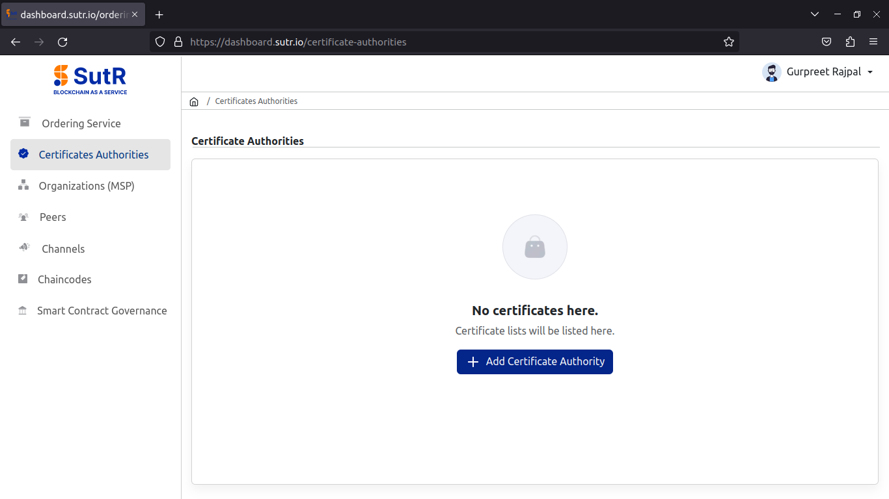
It will show a prompt asking for two options, whether to create a new CA (or) To import CA. Select to create new CA and click on Next.
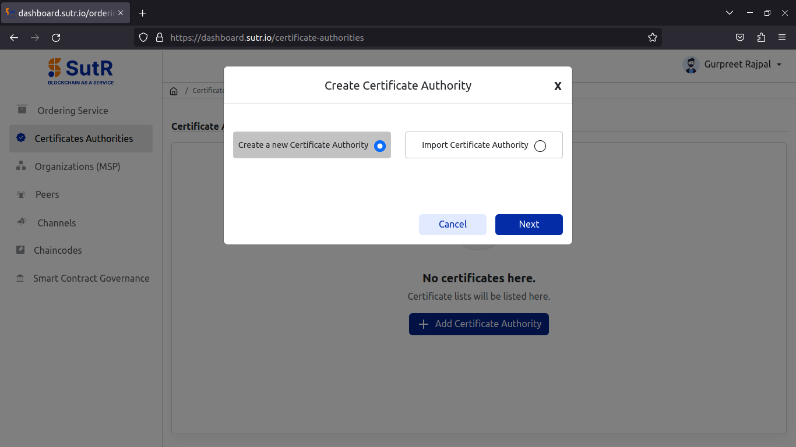
For creating new CA, you will need to fill the following inputs.
1) Display Name – Peer Org CA display name. 2) Domain – Domain to be used with peer endpoints. 3) Organization Name – Name of Peer Org. 4) CA Name – Name of Peer Org CA. 5) Admin Identity Name – Name of Org Admin Identity. 6) Admin Identity Password – Password of Org Admin Identity.
Fill in and click on Next.
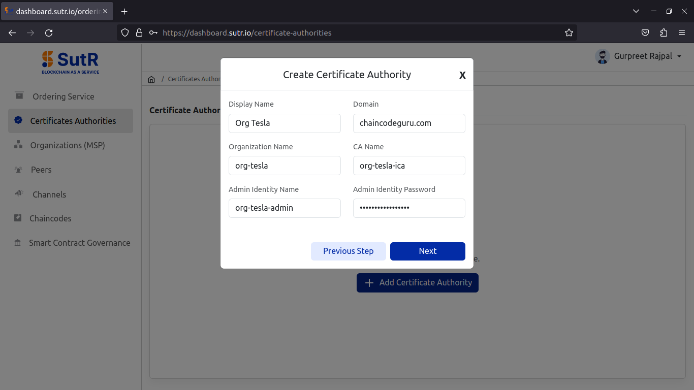
It will then verify if CA subdomain is pointed to IP or not. Click on Confirm.
Once the CA creation is done, you will receive the success prompt like below.
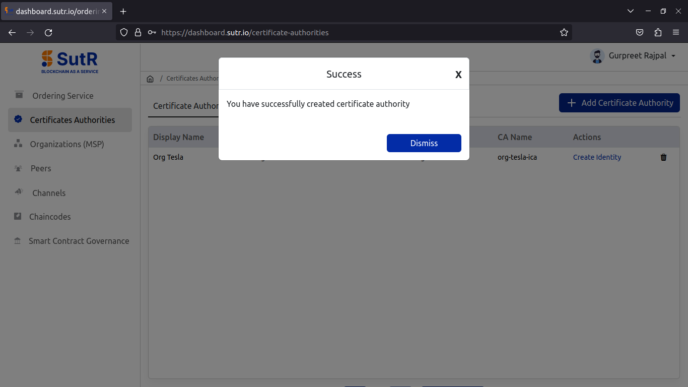
Under the Register Identity tab in CA module, you will see the list of identities registered to the CA which includes a peer, org user and org admin.
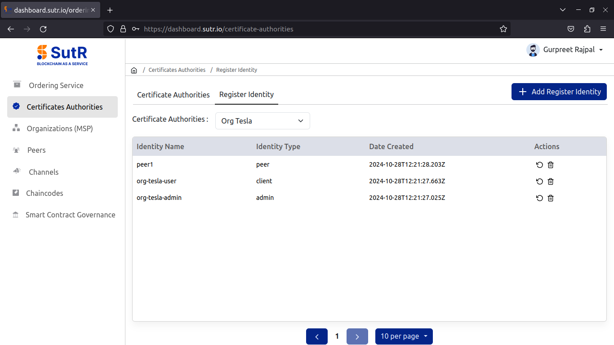
Add Peers
Next, go to Peers module and click on “Add peer”.
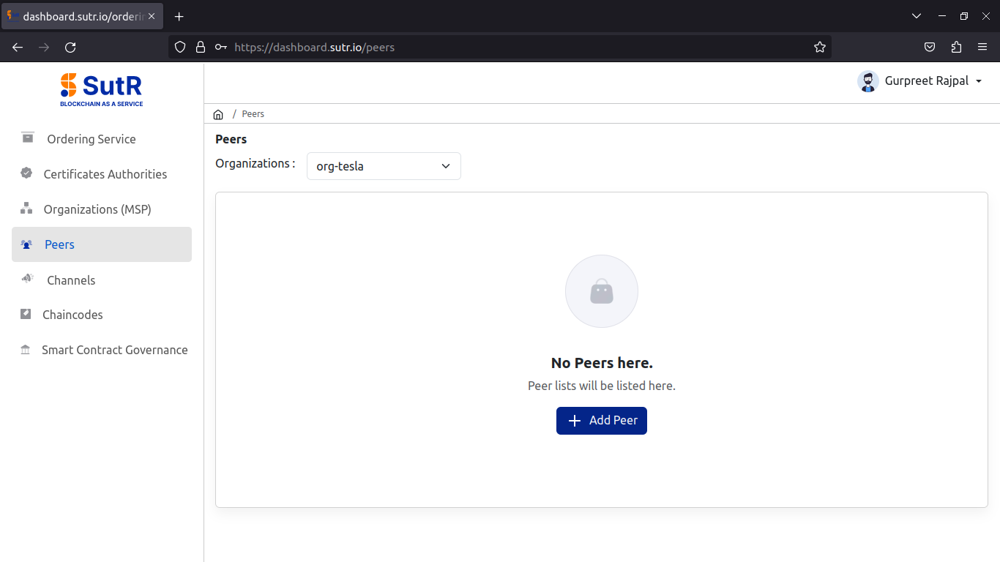
For adding new peer, you will need to fill in the following inputs.
1) Organization – Select peer org name from the dropdown. 2) Organization Domain – Domain to be used with peer endpoints. 3) Display Name – Peer ID. 4) Choose Registered Identity – Select registered peer id from dropdown.
Fill in and click on Next.
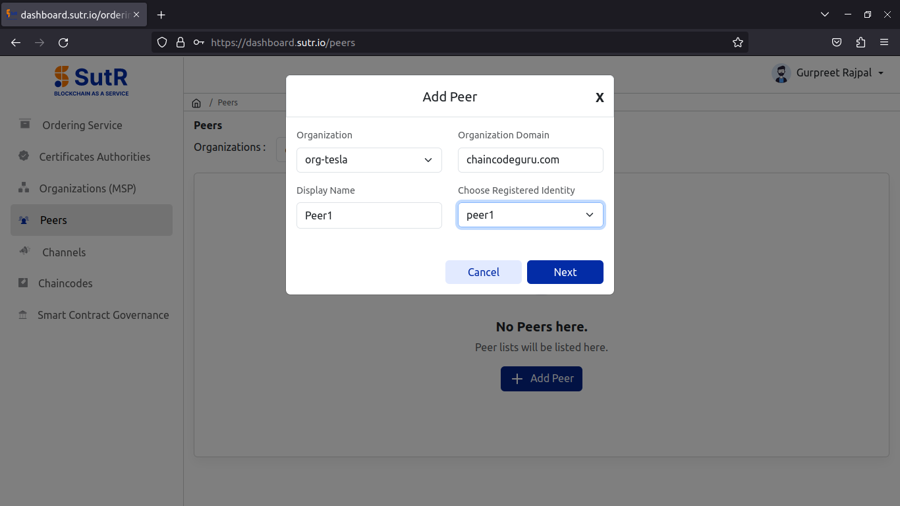
Next page will verify the subdomains, then click on Confirm.
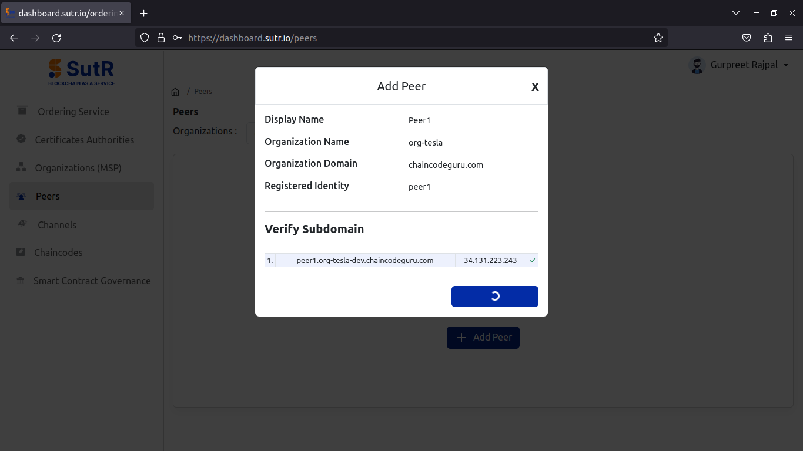
Once the peer is created successfully, you will see a prompt saying it.
Create 2nd Peer Organization
Org-Netflix
Follow all steps from creating CA till adding peer to create the second peer org.
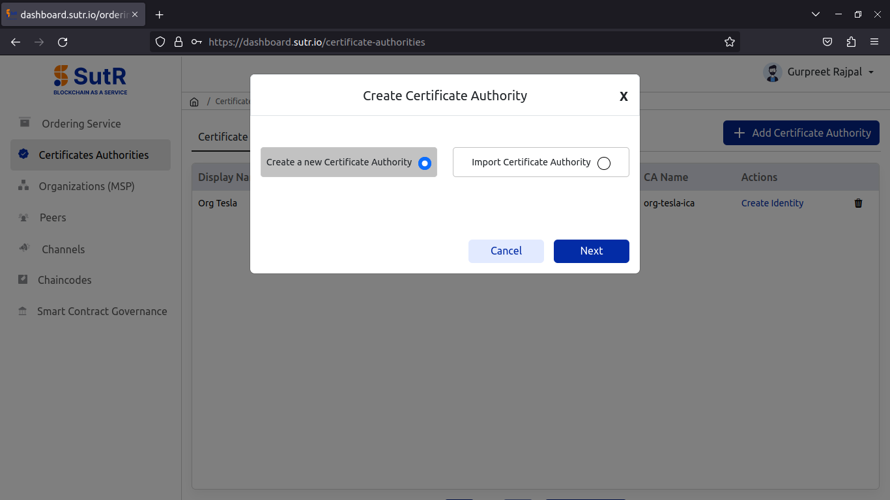
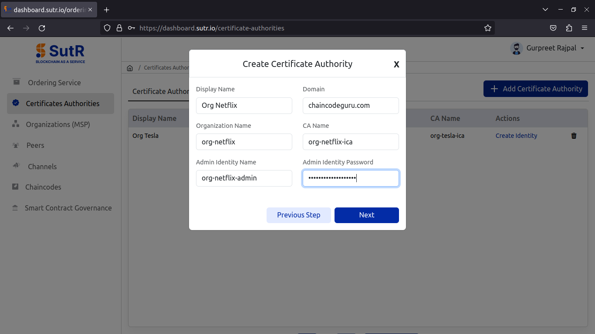
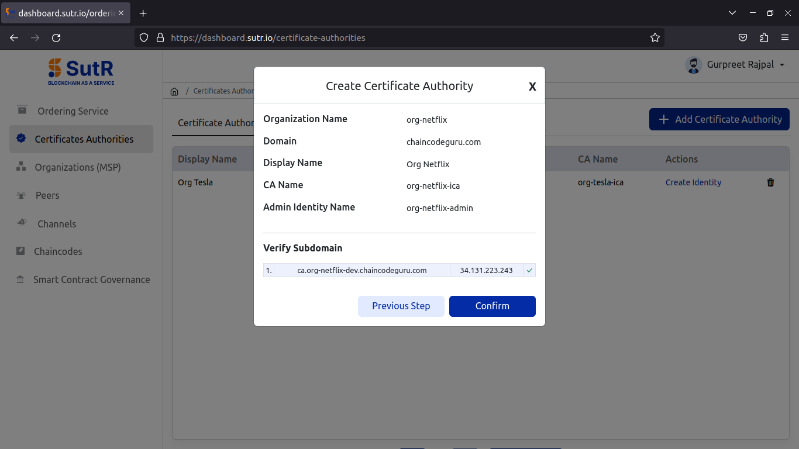
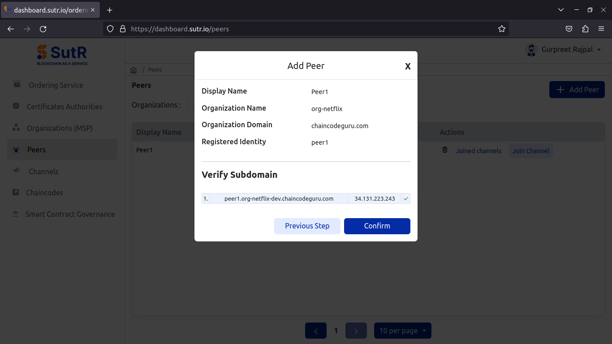
Under the organizations tab, you will see the peer orgs you’ve created. And it will allow you to download CCP and MSP configuration of the org.
CCP (Connection Configuration Profile):
-> The CCP file, typically a YAML or JSON file, contains details about the network's structure, including peer and orderer addresses, channels, and certificates, to facilitate client applications connecting to the Fabric network.
-> It is used by client applications to identify and connect to specific resources within the Fabric network, such as peers and orderers, belonging to different organizations.
MSP (Membership Service Provider):
-> MSP configuration defines identity and access control for the organization, including certificates, signing keys, and CA (Certificate Authority) details, which are essential for verifying the legitimacy and roles of network participants.
-> MSP ensures that each participant’s identity is authenticated and authorized according to network policies, governing who can participate in transactions and access resources.
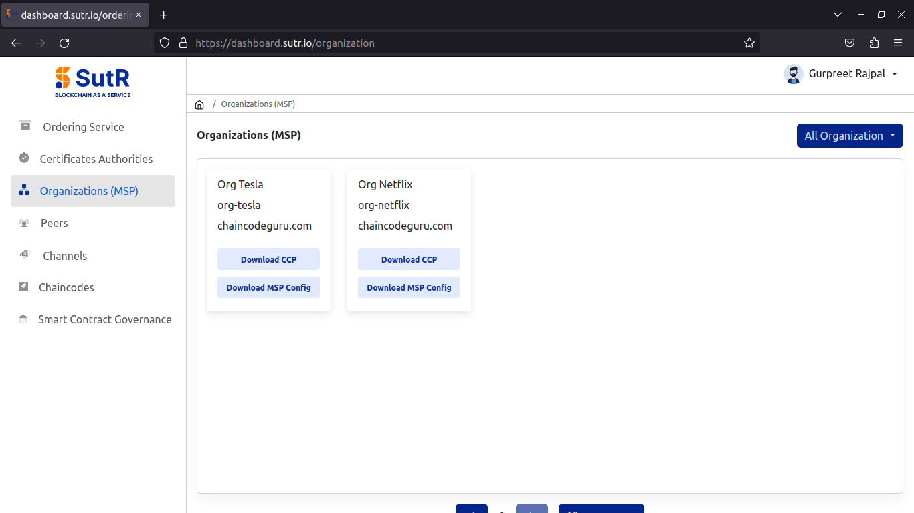